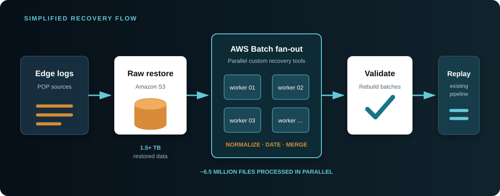

A critical platform could only be tested in production
Before an end-to-end change could be trusted, it had to run against the live logging system and production data.
The legacy WAF/CDN platform collected access and security logs from globally distributed points of presence, processed them through several AWS and application services, and delivered the results through customer dashboards and reports. It had evolved into an interconnected system of networking, storage, batch processing, search infrastructure, and microservices—but no representative development or test environment existed outside production.
The work began with a 1.5+ TB recovery
A change intended to improve difficult log downloads interacted with the legacy pipeline in unexpected ways and contributed to missing customer security logs. With no dev/test environment available, the behavior had not been validated through a representative end-to-end workflow.
I developed recovery tools and ran them as parallel AWS Batch workloads. Raw logs were restored to S3, divided into independent units of work, normalized, merged, and rebuilt into the batches expected by the existing processing system.

Parallelism made the recovery practical, but correctness mattered more than raw throughput. The tools had to preserve the right dates and relationships, regenerate batch metadata, and return the reconstructed data to the established workflow in a controlled way. I also documented the restore procedure and contributed the findings to the incident review so the recovery could become a repeatable operational capability.
I then rebuilt nearly the entire environment
Recovering the data addressed the incident; it did not address the larger engineering risk. I designed and built the AWS development and test environment almost single-handedly, reproducing the relationships among the services rather than creating a few disconnected developer machines.
The environment was intentionally more than a collection of isolated developer instances. It recreated the relationships among networking, storage, compute, event triggers, batch jobs, search infrastructure, and application services—the interactions that mattered most in the original failure.
Reconstructing the platform required me to trace how its components actually worked together, including behavior that had never been captured in one place. That work made me the primary subject-matter expert for the legacy environment and gave the team a safer foundation for future changes, debugging, and modernization.
The rebuild unlocked broader improvements
Once the complete system could be reproduced and observed safely, I made dozens of substantial improvements across its code, infrastructure, deployment automation, CloudWatch telemetry, alerts, and operational monitoring. The dev/test environment made it possible to validate those changes together instead of treating each component as an isolated patch.